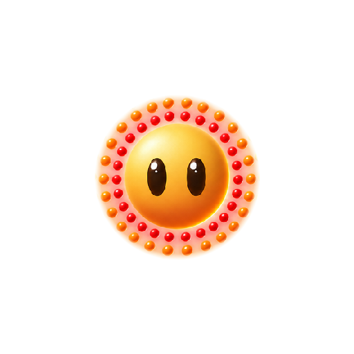

השמש — שש הבעות, על הגוף שלנו
יצירה אחת, 1.50 קרדיטים. לא חמש תמונות נפרדות: ה‑gpt_image_2_5
הזיז את הגוף בכל דבר שייצר היום, אז חמש הבעות נפרדות לא היו מתאימות זו לזו
וכל החלפה הייתה קופצת. גיליון אחד עקבי בתוך עצמו מעצם בנייתו — והוא
חזר עם גוף שמודד r=128 בכל שש התאים.
ואז נחתך מכל תא רק הכדור, הוקטן לגאומטריה שלנו (111/128 = 0.867),
והונח על שכבות הטבעות שכבר היו. הטבעות לא משתנות בין הבעות, כי הן לא חלק
מההחלפה. ששת הקבצים מודדים 223×222 במרכז (256,255) — כולם. זה מה שהופך
החלפה לבלתי נראית.
המצמוץ — שתי תמונות, הקצב שסגרנו
שלוש שניות, ואז חמש. אותו קצב בדיוק שגיליון הדמות הגיע אליו, רק שבמקום למעוך צורה הוא מחליף שתי תמונות.



שש ההבעות, וכל אחת למה
החלפה חיה — תלחץ ותראה שאין קפיצה